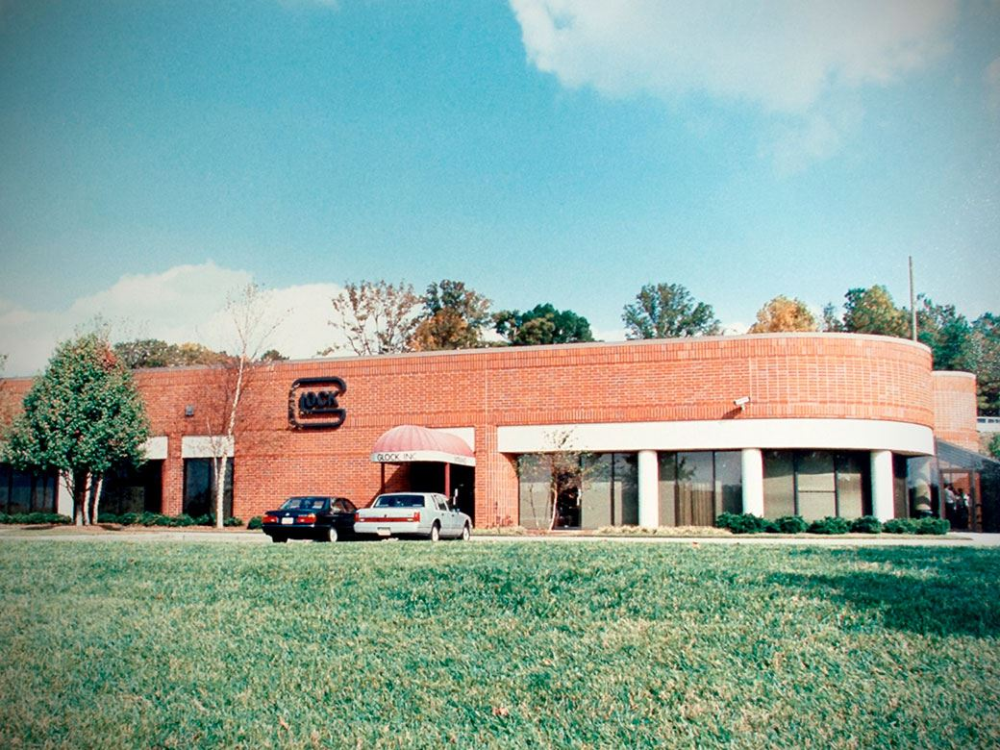

1963
PERFECTION STARTS
Foundation of GLOCK KG by Gaston Glock. The company's history started in Deutsch Wagram, Austria. At the beginning consumer goods made out of wood, polymers and metal were produced by only 3 employees.
1970-1979
FIRST MILITARY PRODUCTS
Development and production start-up of first military products, such as field knives (FM 78), components for fragmentation and training grenades and machine gun belt links.
1980
FOUNDING OF GLOCK GmbH
n the early 1980s, the Austrian Ministry of Defense proceeded with the modernization of the Austrian Armed Forces through an invitation to tender for a new service pistol, which it designated as “Pistole 80” or “P80”. The required self-defense pistol had to have a reduced weight, the highest level of reliability, and safe and simple operation. Gaston Glock recognized his great opportunity and saw a clear target before him: to design an innovative pistol that could be efficiently manufactured, and simple and safe to handle. To this end, he founded GLOCK GmbH in 1980.
1980-1982
BIRTH OF THE GLOCK PISTOL
In the early 1980s the semi-automatic GLOCK service pistol was born. It's polymer frame and the developed Safe Action® System revolutionized the pistol market.
1986
GLOCK GOES U.S.
In the mid 1980s GLOCK pistols were introduced to the U.S. market. Their innovation, durability and reliability immediately captured the attention of both the U.S. law enforcement and commercial markets.
1988
A NEW GENERATION IS INTRODUCED
The 2nd generation (terminology used by the market) came with some design changes to the frame. In order to serve different customer requirements more calibers were added.
1998
RAIL FOR THE NEXT GENERATION
The 3rd Gen pistols (terminology used by the market) got an accessory rail - called the "Universal Glock rail" - to allow the mounting of lasers, tactical lights, and other accessories. Fingergrooves and thumb rests were added to deliver better grip.
2009
START OF GEN 4
The GLOCK Gen4 models deliver more individuality with multiple backstraps which can be mounted onto the frame and a reversible magazine catch. The Gen4 frame keeps the proven thumb rests, finger grooves and accessory rail of the previous generations but features a new frame texturing.
2017
START OF THE NEXT GENERATION: GEN 5
The Generation 5 combines the technology of the future with improved precision, versatility, speed and the familiar reliability. Starting with the models G17 Gen5 and G19 Gen5.
2018
G19X JOINED FORCES
The first ever "Crossover" pistol was introduced. The GLOCK 19X combines the best features of two of its most popular and most trusted field-tested platforms.
2019
NEW OFFICE BUILDING IN DEUTSCH-WAGRAM
Opening of the new office building in Deutsch-Wagram. The building offers modern office facilities, an extended event & training space as well as a new shooting range.
2020 - 2022
GLOCK P80 Anniversary
With the revolutionary Safe Action® System and a resistant and durable polymer frame the GLOCK P80 surpassed a series of military tests and became the standard service pistol for the Austrian Army. Established in the 1980ies the GLOCK P80 later got released to the commercial market as the GLOCK 17 and became one of the most known pistols in the world.